This scene is not unlocked yet in your progress
少女の願い
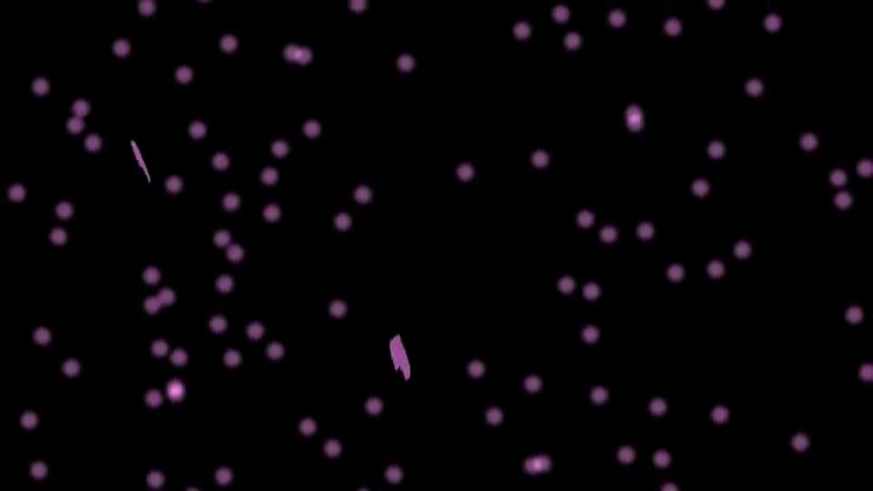
video: 桜山頂.wmv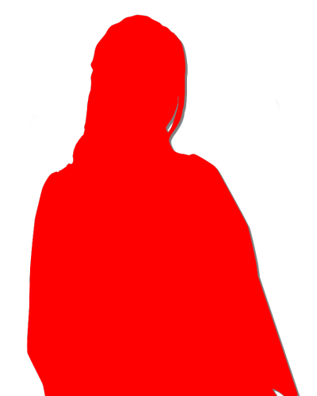
「あなたが……死月妖花……？」
「古郡なつみさん、初めまして。糸姫と申します」
糸姫と名乗る少女。
年齢は14～15ほどだろうか。
紅の着物、そして柔らかくはかなげな微笑み。
チガ姉やサクラさんとは違い、大和撫子という言葉が似合う、黒髪の少女。
「古郡なつみさん、初めまして。糸姫と申します」
糸姫と名乗る少女。
年齢は14～15ほどだろうか。
紅の着物、そして柔らかくはかなげな微笑み。
チガ姉やサクラさんとは違い、大和撫子という言葉が似合う、黒髪の少女。
video: 桜山頂.wmv
この子が、死月妖花……？
あらゆる事件すべての元凶……？
あまりにも威厳のないその姿に戸惑うが、見かけに惑わされてはいけない。
あらゆる事件すべての元凶……？
あまりにも威厳のないその姿に戸惑うが、見かけに惑わされてはいけない。
video: 桜山頂.wmv
「古郡なつみさん、あなたにずっと渡したいものがありました」
video: 桜山頂.wmv
糸姫は、笑みを浮かべたまま、上を指さす。
その方を見ると……。
その方を見ると……。
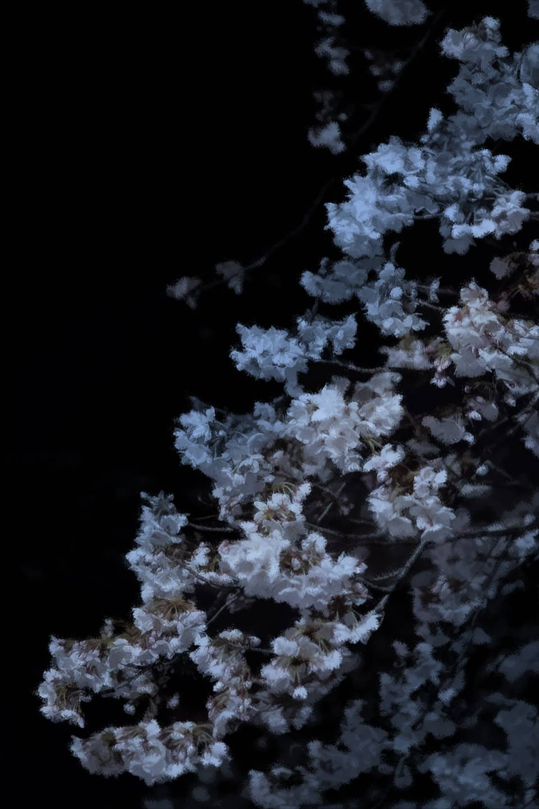
video: 桜山頂.wmv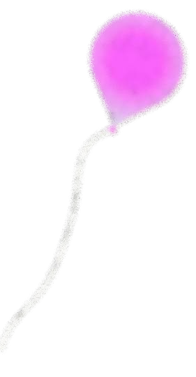
桜の木に引っ掛かる風船。
風は吹いていないのに、その風船だけは風にあおられるかのように、ゆらゆら揺れている。
あの風船…… この景色…… どこかで。
風は吹いていないのに、その風船だけは風にあおられるかのように、ゆらゆら揺れている。
あの風船…… この景色…… どこかで。
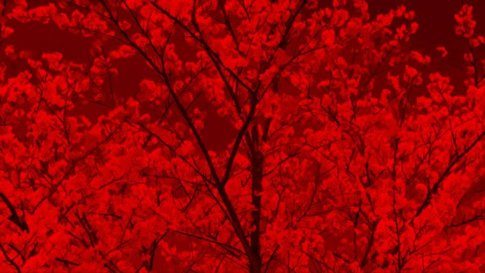
video: 桜山頂.wmv「おい、栄一郎、無理するな！ 下りてこい！ 風船なんてまた買えばいい！」
「僕はこれでも、荒田集落の山育ちなんだ！ 木登りくらいどうってことないよ！」
そうだ、これは――12年前の今日、四月八日のことだ。
私の持っていた風船が手からするりと離れて――。
「僕はこれでも、荒田集落の山育ちなんだ！ 木登りくらいどうってことないよ！」
そうだ、これは――12年前の今日、四月八日のことだ。
私の持っていた風船が手からするりと離れて――。
video: 桜山頂.wmv
一瞬、意識を眠っていた記憶に奪われた。
我に返った時、木に引っ掛かっていたはずの風船が消えていた。
我に返った時、木に引っ掛かっていたはずの風船が消えていた。
video: 桜山頂.wmv
「私、ずっとこれを返したかった」
video: 桜山頂.wmv
目を糸姫に向けると、その手に風船が握られていた。
そして、その風船をすっと私に差し出す。
そして、その風船をすっと私に差し出す。
video: 桜山頂.wmv
「どうぞ。これはあなたのものですよね？」
恐怖心なのだろうか、それとも逆に恐怖を感じさせないその仕草に、気が抜けてしまったのだろうか。
私は促されるまま風船のひもを握る。
と、糸姫は一層晴れやかな笑顔を見せる。
恐怖心なのだろうか、それとも逆に恐怖を感じさせないその仕草に、気が抜けてしまったのだろうか。
私は促されるまま風船のひもを握る。
と、糸姫は一層晴れやかな笑顔を見せる。
video: 桜山頂.wmv
「よかった、やっと返すことができました」
私が風船を受け取ると、そのような告白をする糸姫。
何を言っているの？ これを飛ばしたのは私のはず。
私が風船を受け取ると、そのような告白をする糸姫。
何を言っているの？ これを飛ばしたのは私のはず。
video: 桜山頂.wmv
「栄一郎をこちらに連れていこうとした時、どうしてもその風船が必要だったのです」
どういうこと？ 何を言っているの？ この子は。
と、おばさんが1歩前に出る。
どういうこと？ 何を言っているの？ この子は。
と、おばさんが1歩前に出る。
video: 桜山頂.wmv
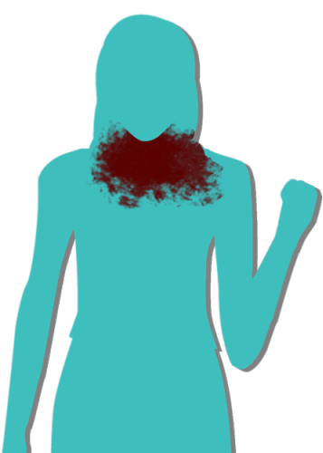
「まさか……！ 栄一郎さんを殺したのは……！
栄一郎さんは事故死じゃなく、あんたが殺したってこと……！？」
「栄一郎は、あなたたちがドローガと呼ぶものを使いました。 彼だけが唯一、私の神使の条件を満たしていたのです」
「あんたが…… あんたが！」
「栄一郎は、あなたたちがドローガと呼ぶものを使いました。 彼だけが唯一、私の神使の条件を満たしていたのです」
「あんたが…… あんたが！」
video: 桜山頂.wmv
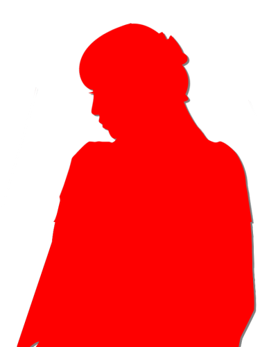
おばさんが思いきり糸姫に向かって平手打ちをする。
おばさんの手は空を切ることなく、そのまま糸姫の頬に当たり、手打ち音が響き渡る。
糸姫は横によろめき、ゆっくりと手を頬に当てる。
おばさんの手は空を切ることなく、そのまま糸姫の頬に当たり、手打ち音が響き渡る。
糸姫は横によろめき、ゆっくりと手を頬に当てる。
video: 桜山頂.wmv
「新村美冬さん、新村春花さんにも謝ります。
あなたたちの大切なものを奪い、私のものにしました」
video: 桜山頂.wmv
「『私のもの』ですって……？
何なのよ、その言い方は！」
video: 桜山頂.wmv
「お母さんやめろ！ 落ち着け！」
もう一度殴り掛かりそうになるおばさんを春花がつかみかかる。
もう一度殴り掛かりそうになるおばさんを春花がつかみかかる。
video: 桜山頂.wmv
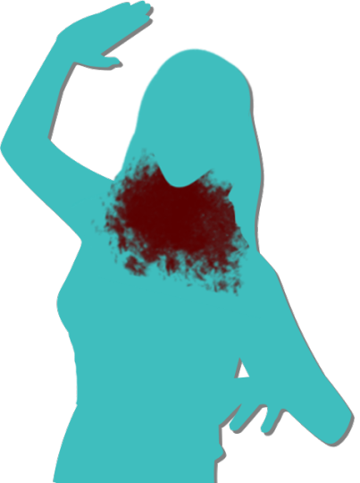
「春花！ 栄一郎さんを殺したのはこの娘なのよ！？」
「ま、待てお母さん！ 今すぐこいつをどうこうしたって解決する話じゃないだろ！？」
「離しなさい！ この小娘に、もう一度……！」
「やめろ……！」
春花たちのやり取りを、糸姫は頬を押さえながら眺めている。
「ま、待てお母さん！ 今すぐこいつをどうこうしたって解決する話じゃないだろ！？」
「離しなさい！ この小娘に、もう一度……！」
「やめろ……！」
春花たちのやり取りを、糸姫は頬を押さえながら眺めている。
video: 桜山頂.wmv
「そうですよね……。私のこと、殺したいほど憎いはずです」
「何が殺したいほど、よ！ どうせあんたも死体なんでしょ！？」
「いいえ、私は生きた人間です」
「はあ……！？」
「何が殺したいほど、よ！ どうせあんたも死体なんでしょ！？」
「いいえ、私は生きた人間です」
「はあ……！？」
video: 桜山頂.wmv
「私は、あなたたちが死月妖花と呼んでいる者の力を借りて、数百年生きてきました」
video: 桜山頂.wmv
数百年生きてきた……？
見た目は明らかに私よりも年下。
格好は古風であるが、それでもそんなに長く生きてきたと言われても、信じがたいものがある。
見た目は明らかに私よりも年下。
格好は古風であるが、それでもそんなに長く生きてきたと言われても、信じがたいものがある。
video: 桜山頂.wmv
「茅萱さん、夏菜さん。あなたたちにも、謝ります。
サクラをこちらに連れて行きました」
video: 桜山頂.wmv
「ん…………お母さんを殺した、真犯人……」
video: 桜山頂.wmv
「いきなり言われたって……」
video: 桜山頂.wmv
この姉妹は、どうもしっくりきていないようだ。
そりゃ、いきなり現れた見知らぬ少女が自白したところで、戸惑うのも無理はない。
おばさんの激昂も理解はできるが……。
そりゃ、いきなり現れた見知らぬ少女が自白したところで、戸惑うのも無理はない。
おばさんの激昂も理解はできるが……。
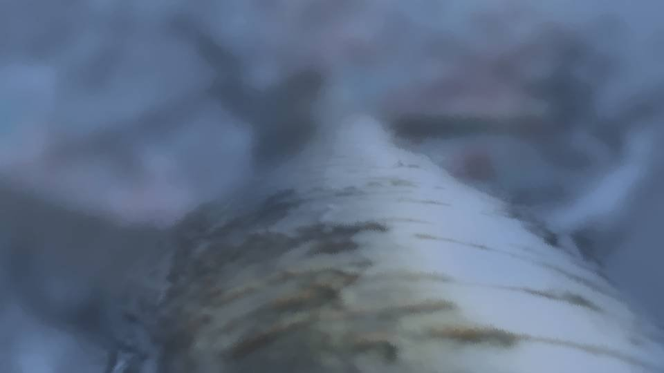
video: 桜山頂.wmvそこまでして成し遂げたい目的があったはずだ。
この糸姫が何者なのかまだ分からないが、少なくとも元凶のニアリーイコールなのは間違いない。
それを聞くべきなのかどうか―― そもそも、それを聞いてどうするのか―― ここから脱出できるのか―― 以前のように元木町で平和に暮らせるのか。
時間が経つにつれ、私の思考も現実に戻っていく。
この糸姫が何者なのかまだ分からないが、少なくとも元凶のニアリーイコールなのは間違いない。
それを聞くべきなのかどうか―― そもそも、それを聞いてどうするのか―― ここから脱出できるのか―― 以前のように元木町で平和に暮らせるのか。
時間が経つにつれ、私の思考も現実に戻っていく。
video: 桜山頂.wmv
「あなたの目的は何なの？ 何でこんなことを……」
「私の目的は…… 元木町で生きることです」
「元木町で……？」
「はい、私はこの地を捨てて、元木町に腰を据えるつもりです」
「えっと…… そうすると、何が起こるの……？」
「私の目的は…… 元木町で生きることです」
「元木町で……？」
「はい、私はこの地を捨てて、元木町に腰を据えるつもりです」
「えっと…… そうすると、何が起こるの……？」
video: 桜山頂.wmv
元木町すべての人間の命をもらいます。
video: 桜山頂.wmv
やっぱり、この子は違う。
この子は、普通の人間なんかじゃない……！
私たちに謝罪し、譲歩を見せておきながら、目的達成のために手段を選ぶつもりはないようだ。
なぜ元木町へ行くのか知らないが、昼間に豊岳駅で見えた直感が、ようやくここでつながった。
この子は、普通の人間なんかじゃない……！
私たちに謝罪し、譲歩を見せておきながら、目的達成のために手段を選ぶつもりはないようだ。
なぜ元木町へ行くのか知らないが、昼間に豊岳駅で見えた直感が、ようやくここでつながった。
video: 桜山頂.wmv
「ふざけんな！ なんでお前のわがままで元木町がゴーストタウンになるんだよ！」
「ゴーストタウン……と言うのは、廃墟のことでしょうか？ 廃墟にはなりません。 元木町に、素晴らしく大きな桜の木が生え、その周りには虫たち、その虫を求めて小動物や鳥もやってきます。 元木町は形を変えて繁栄します」
「ゴーストタウン……と言うのは、廃墟のことでしょうか？ 廃墟にはなりません。 元木町に、素晴らしく大きな桜の木が生え、その周りには虫たち、その虫を求めて小動物や鳥もやってきます。 元木町は形を変えて繁栄します」
video: 桜山頂.wmv
「そういうことを言ってるんじゃないんだよ！ 人間を殺すつもりなんだろ！？」
「いえ、人間を含めた哺乳類すべてです」
「余計ダメだろ！ そんなのやめろ！ すぐにやめろ！」
「いえ、人間を含めた哺乳類すべてです」
「余計ダメだろ！ そんなのやめろ！ すぐにやめろ！」
video: 桜山頂.wmv
「多くの犠牲が出ることは心苦しいですが、私はこのために、800年以上待ち続けたのですから。
本当はより多くの人々が元木町に集まるまで――
そうですね、あと15年ほど待とうと思いましたが……。
あなたたちに知られてしまった以上、急がないといけません。
元木町は近いうちに、この山のように桜の底に沈みます」
video: 桜山頂.wmv
「なつみ、こいつには何を言っても無駄だ！」
video: 桜山頂.wmv
「やっぱり、この小娘はここで殺すべきよ……！」
「私も、もうお母さんを止める気にならないぜ……」
害にしかならない存在――そのような者もいるのがこの世の常だ。
例え自分が正義だと謳っても、対立する者にとっては悪でしかない。
だからこのような争いが起こるのだ。
「私も、もうお母さんを止める気にならないぜ……」
害にしかならない存在――そのような者もいるのがこの世の常だ。
例え自分が正義だと謳っても、対立する者にとっては悪でしかない。
だからこのような争いが起こるのだ。
video: 桜山頂.wmv
「糸姫ちゃんだっけ？
私、あなたがそんなに悪い人とは思わないけど、やめるつもりがないなら、私の血、たっぷり浴びせるよ？
自分の致死量くらい分かってるから」
夏菜ちゃんは脚を引きずりながら前に出、腕にナイフを当てる。
夏菜ちゃんは脚を引きずりながら前に出、腕にナイフを当てる。
video: 桜山頂.wmv
「ドローガに感染した第一世代と第二世代は、ミイラの胞子でおかしくなるのに、第三世代はおかしくならない。
第三世代には、何らかの抗体があるってことでしょうね。
それが死月妖花に付着すると、抗体が死月妖花の細胞を破壊し始める。
そんなところでしょうか」
五島も糸姫への宣戦布告に反対するつもりはないようだ。
五島も糸姫への宣戦布告に反対するつもりはないようだ。
video: 桜山頂.wmv
「確かに、あなたの血で死月妖花は苦しみます。
でも、あなたの血を目いっぱい絞り切ったところで、私たちを滅ぼすほどの量はありません。
せめて、茅萱さんが第三世代のままでその血をすべて絞り切り、そこに夏菜さんの全血液を足せば可能だったかもしれませんが……。
そう言う意味でも、栄一郎は茅萱さんにファルシフィカソを使ったんですよ」
video: 桜山頂.wmv
「で、でも！ それでも糸姫ちゃんを倒せるなら……！」
「だから、あなたの血だけでは足りませんよ？ 試してもいいですけど、あなたが無駄死にするだけです。 そもそも私は生きた人間ですし、今、死月妖花から離れていますから、私があなたの血に触れても何の効果もありません」
「く……！」
「だから、あなたの血だけでは足りませんよ？ 試してもいいですけど、あなたが無駄死にするだけです。 そもそも私は生きた人間ですし、今、死月妖花から離れていますから、私があなたの血に触れても何の効果もありません」
「く……！」
video: 桜山頂.wmv
「さあ、そろそろ始めましょうか。
私はできるだけ犠牲者を増やしたくないんです。
古郡なつみさんと、あと1人――
誰か、第一世代の生者になってもらえれば、他の人は生きたままお返しすると約束します」
video: 桜山頂.wmv
「待て！ なつみとあと1人はどうなるんだ！？」
「見ての通り、栄一郎やサクラのように巨木となり、神使として未来永劫、安息の時間が与えられます」
「見ての通り、栄一郎やサクラのように巨木となり、神使として未来永劫、安息の時間が与えられます」
video: 桜山頂.wmv
「ふざけるな！ そんなの死ぬも同然だろ！？
なつみが死ぬなんて絶対に許さない！」
「古郡なつみさんと離れるのが辛いですか？」
「当たり前だろ！」
「だったら、あなたが第一世代の生者になってみませんか？」
「は！？」
「そしたら、ずっとずっとなつみさんと一緒ですよ？」
「古郡なつみさんと離れるのが辛いですか？」
「当たり前だろ！」
「だったら、あなたが第一世代の生者になってみませんか？」
「は！？」
「そしたら、ずっとずっとなつみさんと一緒ですよ？」
video: 桜山頂.wmv
「やっぱりお前……！ 狂ってるよ……！」
「悪くない話だと思いますよ？ 春花さんが第一世代の生者になれば、他の人たちは無傷で帰ることができます。 それに、ただ第一世代になるだけではダメなんです。 生者を神使とする場合、自ら神使になることを選ばないといけない。 ヴェルジのミイラが使えない以上、神使になりたいと思ってもらわないと」
「悪くない話だと思いますよ？ 春花さんが第一世代の生者になれば、他の人たちは無傷で帰ることができます。 それに、ただ第一世代になるだけではダメなんです。 生者を神使とする場合、自ら神使になることを選ばないといけない。 ヴェルジのミイラが使えない以上、神使になりたいと思ってもらわないと」
video: 桜山頂.wmv
「お前らの仲間になりたいなんて思うわけないだろ！」
「もう一度よく考えてみてください。 このままでは、きっと栄一郎やサクラがここにいる全員を殺します。 でも、あなたが第一世代となり、神使になることを選べば、他のみんな―― 集落の住人たちも全員無事なんです」
「もう一度よく考えてみてください。 このままでは、きっと栄一郎やサクラがここにいる全員を殺します。 でも、あなたが第一世代となり、神使になることを選べば、他のみんな―― 集落の住人たちも全員無事なんです」
video: 桜山頂.wmv
「そんな……！ でも――」
「みんなを人質にして、私と春花を神使にして、死月妖花の仲間にさせる……。 それでみんなが助かる……？」
「みんなを人質にして、私と春花を神使にして、死月妖花の仲間にさせる……。 それでみんなが助かる……？」
video: 桜山頂.wmv
「何迷ってるんですか！ そんなの絶対にダメです！」
「わ、分かってるって！」
「っていうか迷ってねえし！」
「わ、分かってるって！」
「っていうか迷ってねえし！」
video: 桜山頂.wmv
「交渉決裂ね、どこまで行っても話は平行線。
糸姫のお嬢ちゃん、あなたが何のつもりか知らないけど、ここで死んでくれたらいいの」
video: 桜山頂.wmv
「ん……もし、あなたが生者だと言うなら、あなたの頸動脈をこれで切り裂いたらどうなるのかしら？」
「試してみたらどうですか？ 私が死ぬだけですよ？」
「試してみたらどうですか？ 私が死ぬだけですよ？」
video: 桜山頂.wmv
「ん……死ぬだけって……。
何を言っているのか分かってるの！？」
「私の首を切ったら、私は死ぬだけ。それだけで、何も変わりません。 私はすぐに死月妖花の力で死者のままよみがえり、元木町を桜の木で――」
「私の首を切ったら、私は死ぬだけ。それだけで、何も変わりません。 私はすぐに死月妖花の力で死者のままよみがえり、元木町を桜の木で――」
video: 桜山頂.wmv
「もういい！ 何をしたって無駄ってことだな！？
そもそも、お前の目的なんてどうでもいいけど、何で元木町にこだわるんだよ！」
video: 桜山頂.wmv
「…………？
言っている意味がよく分かりません」
「だーかーら！ 何で元木町にお前が行く必要あるんだよ！ 何で元木町なんだよ！」
「それはあなたと同じ理由ですよ」
「はあ？」
だんだんと価値観の違いが露呈されてきただけでなく、話すらかみ合わなくなっている。
おばさんの言うとおり、これ以上の交渉など何の意味もない。
「だーかーら！ 何で元木町にお前が行く必要あるんだよ！ 何で元木町なんだよ！」
「それはあなたと同じ理由ですよ」
「はあ？」
だんだんと価値観の違いが露呈されてきただけでなく、話すらかみ合わなくなっている。
おばさんの言うとおり、これ以上の交渉など何の意味もない。
video: 桜山頂.wmv
また地震……！ 今度は何が起こるの？
video: 桜山頂.wmv
「くそ！ お前がやっているのか！？」
「いいえ、これは私の意思ではなく死月妖花がやっていることです。 どうやら、ここと元木町が完全につながったようです」
「つながった……！？」
「いいえ、これは私の意思ではなく死月妖花がやっていることです。 どうやら、ここと元木町が完全につながったようです」
「つながった……！？」
video: 桜山頂.wmv
「ご存じの通り、死月妖花は菌類です。
死月妖花は私の意思に従い、800年かけてここから元木町へ菌糸を伸ばしていきました。
そのような桜の木、見覚えがあるはずです。
ここにある桜のように、突然生えた桜が元木町にも」
video: 桜山頂.wmv
まさか……！

 video: 桜山頂.wmv
video: 桜山頂.wmv「初めてここと元木町がつながったのは、60年ほど前。
1つの分身を生やし、それから地下に菌糸を張り巡らせ、土壌を死月妖花に適した質に作り替え――。
いよいよ、死月妖花全体が元木町で自生できる環境が整いました。
あとは地下を通って向こうに移動し、4人の神使と共に願いを成就させるだけです」
video: 桜山頂.wmv「先ほど栄一郎が言った通り、死月妖花には第三世代の血液と言う致命的な弱点があります。
しかし生きた第一世代と第二世代、そして死亡した第一世代と第二世代――
彼らの体内で成熟した死月妖花の分身を取り込むことで、死月妖花は弱点のない不死の生物として完成します」
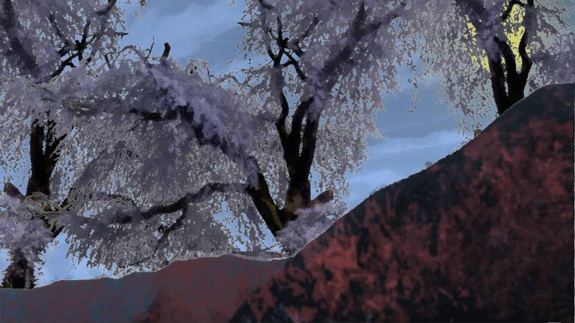
video: 桜山頂.wmv「ご覧ください、これらはすべて、死月妖花の一部です。
しかし、これだけの桜を咲かせるために、死月妖花はこの荒田の地の滋養をすべて吸い尽くしてしまいました。
もう、この地は腐り、水は枯れ、荒れ地となるでしょう」
video: 桜山頂.wmv
「死月妖花は、遠くへ移動する際に、たくさんの力を消費します。
このように大きな木を生やすのは、その子実体に栄養を貯えるためです。
本来なら目立たないように少しずつ吸収するつもりでしたが、もうそのような余裕もありません。
今、死月妖花の体内には、有り余るほどの力が貯えられており、そのすべてを使い、身体を細分化して少しずつ元木町へ移動します」
video: 桜山頂.wmv
「とりあえず、あなたたちの意思は分かりました。
私に協力していただく気がないのなら――。
私が直接手を下すしかありません」
その言葉を聞いてチガ姉と夏菜ちゃんはナイフを構え、私たちも襲撃に備え身構える。
糸姫は、何やら細長いものを服の中から取り出した。
その言葉を聞いてチガ姉と夏菜ちゃんはナイフを構え、私たちも襲撃に備え身構える。
糸姫は、何やら細長いものを服の中から取り出した。
video: 桜山頂.wmv
「栄一郎がこれをくれました。これが、ドローガの液体なんですね。
これを、誰かに注入すれば、すべての神使が揃う。
茅萱さん、
video: 桜山頂.wmv
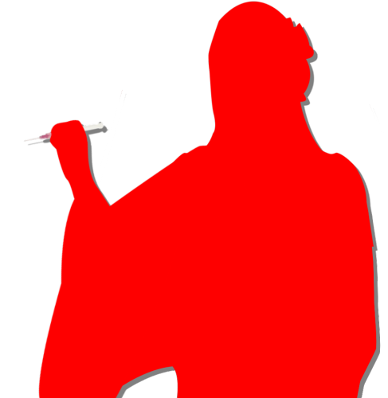
失礼します」
video: 桜山頂.wmv
と、糸姫は注射器を握りチガ姉に向かって走り出した。
しかし、普通の少女のように、緩慢な動作で走っているだけだ。
しかし、普通の少女のように、緩慢な動作で走っているだけだ。
video: 桜山頂.wmv
「ん……何なのよ……」
video: 桜山頂.wmv
チガ姉は難なく、それをかわす。
video: 桜山頂.wmv
「茅萱さん！」
もう一度チガ姉に向かって注射器を振り上げる―― が、滑稽なほど動きが鈍い。
運動の苦手な年相応の少女そのものを見ているかのよう。
必死な顔でチガ姉に腕を振り下ろすが、よろけて膝をつく。
もう一度チガ姉に向かって注射器を振り上げる―― が、滑稽なほど動きが鈍い。
運動の苦手な年相応の少女そのものを見ているかのよう。
必死な顔でチガ姉に腕を振り下ろすが、よろけて膝をつく。
video: 桜山頂.wmv
「はあ……はあ……お願いします、誰か、誰かこれを……！
美冬さん！ これで栄一郎といつまでも一緒にいられます！」
video: 桜山頂.wmv
今度はおばさんに向かって注射器を振り回す。
そのぎこちない動きに、おばさんは戸惑いながらもよける。
そのぎこちない動きに、おばさんは戸惑いながらもよける。
video: 桜山頂.wmv
「は、春花さん！ これがあれば、な、なつみさんとずっと一緒なんですよ！」
video: 桜山頂.wmv
糸姫は息を切らせながらふらふらと春花に向かって走り出す。
しかし、春花に近づいた瞬間、
しかし、春花に近づいた瞬間、
video: 桜山頂.wmv
平手打ちの音が響く。
video: 桜山頂.wmv
「ふざけないで。春花に手を出したら、絶対に許さない」
おばさんの渾身の平手打ちを受けた糸姫は弱弱しく尻もちをつく。
おばさんの渾身の平手打ちを受けた糸姫は弱弱しく尻もちをつく。
video: 桜山頂.wmv
「こんなところで……
ここまで来てあきらめるわけにはいかないんです！
五島さん、あなたは――」
video: 桜山頂.wmv
「エリ姉に手を出すなら、糸姫ちゃんの身体バラバラに切り裂いて、ドローガの液体全部捨てちゃうけど？」
video: 桜山頂.wmv
「ん……あんな動きじゃ、あなたの野望は叶わないわ。
もう、あきらめた方がいいわよ」
「やだ……！ 800年も待ったのに……！ ねえ、お願い！ 私みたいに何百年も何千年も生きられるのよ！？ みんな死ぬの怖いでしょ！？ 永遠に生きたくないの！？」
「やだ……！ 800年も待ったのに……！ ねえ、お願い！ 私みたいに何百年も何千年も生きられるのよ！？ みんな死ぬの怖いでしょ！？ 永遠に生きたくないの！？」
video: 桜山頂.wmv
「何千年もこんな化け物キノコと一緒なんて、死んだ方がマシだ！」
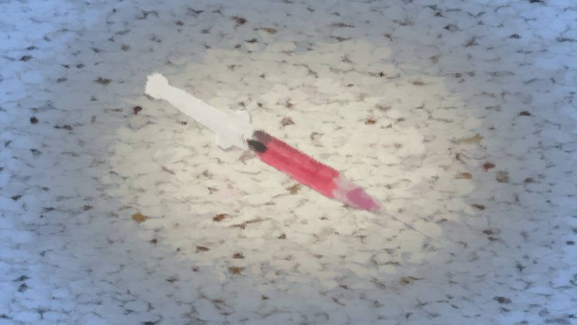
video: 桜山頂.wmv「誰でもいいんです！
これを打ち、大切な人と永遠に時を過ごしたいと望めば、それでいいんです！」
「寝言言ってろ！」
「あんたたちみたいな化け物にすがるつもりはないわ」
「寝言言ってろ！」
「あんたたちみたいな化け物にすがるつもりはないわ」
video: 桜山頂.wmv
「う……うう……！ 誰か……お願い……！
お願いします！
お願い……！」
そのまま土下座で懇願する。
そのまま土下座で懇願する。
video: 桜山頂.wmv
「どうして誰も分かってくれないの……！
私はこんなに長い間我慢してきたのに……！」
「あんたのわがままで何でも許されると思っ？」
「だから……！ だから、大切な人と一緒にいられるって言ってるじゃないですか！」
「あんたのわがままで何でも許されると思っ？」
「だから……！ だから、大切な人と一緒にいられるって言ってるじゃないですか！」
video: 桜山頂.wmv
「どうやら本当にただの人間みたいね。
よくまあこんな小娘がここまでやってくれたこと。
ほら、顔上げなさいよ」
おばさんはつま先で糸姫の顎を上へ向ける。
糸姫の目からは涙がこぼれていた。
「情けない面ね。これが女神？ は！ 聞いて呆れるわ」
「うう……」
おばさんはそのまま糸姫のあごを蹴り上げた。
おばさんはつま先で糸姫の顎を上へ向ける。
糸姫の目からは涙がこぼれていた。
「情けない面ね。これが女神？ は！ 聞いて呆れるわ」
「うう……」
おばさんはそのまま糸姫のあごを蹴り上げた。
video: 桜山頂.wmv
「げほ……げほ……」
「さあ、お仕置きの時間よ。800年分の悪事、楽に死ねないわよ？」
おばさんは再度、足を振り上げた。
「さあ、お仕置きの時間よ。800年分の悪事、楽に死ねないわよ？」
おばさんは再度、足を振り上げた。
video: 桜山頂.wmv
「んー！」
と、糸姫は注射器をおばさんの足へ突き刺そうとする、が――。
と、糸姫は注射器をおばさんの足へ突き刺そうとする、が――。
video: 桜山頂.wmv
「私のお母さんに何する気だよ」
春花は低い声を上げながら、糸姫の肩を蹴りつける。
糸姫の身体は抵抗なく地面に倒れ込む。
思っていた以上に、糸姫は普通の少女だった。
もう、この観衆は糸姫を恐れていない。
春花は低い声を上げながら、糸姫の肩を蹴りつける。
糸姫の身体は抵抗なく地面に倒れ込む。
思っていた以上に、糸姫は普通の少女だった。
もう、この観衆は糸姫を恐れていない。
video: 桜山頂.wmv
「この小娘！ 栄一郎さんを返せ！
家族を返せ！」
おばさんがさらに足蹴を食らわせる。
「ん……もうこの子の言い分は聞き飽きたわ」
「そうだね。ママの敵討ちしようか」
チガ姉と夏菜ちゃんも糸姫を取り囲む。
おばさんがさらに足蹴を食らわせる。
「ん……もうこの子の言い分は聞き飽きたわ」
「そうだね。ママの敵討ちしようか」
チガ姉と夏菜ちゃんも糸姫を取り囲む。
video: 桜山頂.wmv
「お願いします……！
お願い！ 800年も待っていたのに……！」
糸姫が再び地に手と頭をつき懇願する。
が、
「黙れ！」
「知るかそんなこと！」
おばさんと春花が、糸姫の手を同時に踏みつける。
糸姫が再び地に手と頭をつき懇願する。
が、
「黙れ！」
「知るかそんなこと！」
おばさんと春花が、糸姫の手を同時に踏みつける。
video: 桜山頂.wmv
「ぐ……！ 痛い……！」
「痛いの？ これまでたくさん人を殺しておいて、今さらそんなことよく言えるわね」
「お前にはこれでもまだぬるいくらいだ」
春花はさらに糸姫の手をグリグリと踏みつける。
「痛いの？ これまでたくさん人を殺しておいて、今さらそんなことよく言えるわね」
「お前にはこれでもまだぬるいくらいだ」
春花はさらに糸姫の手をグリグリと踏みつける。
video: 桜山頂.wmv
「死んでも死月妖花の力でよみがえるんだっけ？
だったらよみがえれないほどにバラバラにしてあげようか？」
「ん……私にお母さんを殺そうとさせて、さらに私に罪をなすりつけてきた。 えっと、手足を切り落としても死なないようにするには……」
「すぐ殺したらだめだぞ」
「いや……！ やめて……！」
「ん……私にお母さんを殺そうとさせて、さらに私に罪をなすりつけてきた。 えっと、手足を切り落としても死なないようにするには……」
「すぐ殺したらだめだぞ」
「いや……！ やめて……！」
video: 桜山頂.wmv
「ねえ、ちょっとみんな……」
みんなが怒りをぶつける気持ちは分かる。
でも、何というか―― 憐れだ。
憐れという言葉しか思い浮かばない。
死月妖花から切り離されたら、非力な少女。
それをこの人数で怒りに任せ囲い込む。
みんなが怒りをぶつける気持ちは分かる。
でも、何というか―― 憐れだ。
憐れという言葉しか思い浮かばない。
死月妖花から切り離されたら、非力な少女。
それをこの人数で怒りに任せ囲い込む。
video: 桜山頂.wmv
「ほら立てよ！ 1人じゃ何もできないくせにノコノコ出てきやがって！」
video: 桜山頂.wmv
「それがどれだけ恐ろしいことか、教えてあげるわ。
まずは、死なない程度に痛めつけて……
そうね、最後は全身の皮でも剥いであげましょうか？」
video: 桜山頂.wmv
「ん……私、人に対してあまり怒ることはないの。
でも、お母さんを殺した犯人が目の前にいるとなっては話は別」
video: 桜山頂.wmv
「人間を狩るのは初めてだね」
video: 桜山頂.wmv
「あの……ちょっとやり過ぎじゃ……」
video: 桜山頂.wmv
「黙れよ！ 私たちは家族を殺されたんだぞ！？」
video: 桜山頂.wmv
「ん……それだけじゃない、集落のみんなの不信を煽って苦しめてきた。
おばあちゃんを悩ませ、お父さんは犯人扱いされて」
video: 桜山頂.wmv
「切腹くらいで済む話じゃないよね。こう見えても私史上1番の激おこだよ？」
video: 桜山頂.wmv
死月妖花という人災とも天災とも言える存在を操っていたのは、このか弱く無力な少女だった。
そもそも、こんな子が本当に死月妖花を操っていたのだろうか。
この非力で華奢な姿を見ると、それすら疑わしくなる。
そもそも、こんな子が本当に死月妖花を操っていたのだろうか。
この非力で華奢な姿を見ると、それすら疑わしくなる。
video: 桜山頂.wmv
「お願い、その子と話をさせて」
video: 桜山頂.wmv
「はあ！？」
私は糸姫に向かって歩み寄る。
「待てよなつみ！ 話なんてしてどうするんだよ！」
「私、まだこの子から聞きたいことがあるの」
私は糸姫に向かって歩み寄る。
「待てよなつみ！ 話なんてしてどうするんだよ！」
「私、まだこの子から聞きたいことがあるの」
video: 桜山頂.wmv
「ふざけんなよ！ こいつが大量殺人犯であることに変わりはないだろ！？」
video: 桜山頂.wmv
「ん……それどころか、集落の結束をめちゃくちゃにした」
video: 桜山頂.wmv
「待って下さい。それでは魔女狩りのように、昔の野蛮な刑罰と同じです。
今の時代、例え凶悪犯であっても弁護士をつけ、なぜ犯行に至ったのかをすべて聞くのが通例です。
それとも、新村先輩たちは時代錯誤の野蛮人なんですか？」
video: 桜山頂.wmv
「五島、お前……！」
「今先輩たちがやっていることは、その子のように身勝手で野蛮なことなんです」
「ち！ 分かったよ！ 好きにしろよ！」
「今先輩たちがやっていることは、その子のように身勝手で野蛮なことなんです」
「ち！ 分かったよ！ 好きにしろよ！」
video: 桜山頂.wmv
「まあ……急いでるわけじゃないし」
video: 桜山頂.wmv
取り囲んでいた4人が、糸姫への道を空ける。
そして、いまだに地に手をつける糸姫と視線を合わせる。
そして、いまだに地に手をつける糸姫と視線を合わせる。
video: 桜山頂.wmv
「ねえ教えて。ちゃんとあなたの話を聞きたいの」
「おいなつみ、近づくな！ ドローガ刺されるぞ！」
「私は第二世代だから意味ないよ」
「でもよ……」
「あなた、本当にこれだけのことをやった人なの？」
「…………」
「ねえ、教えて。あなたがやったの？」
「おいなつみ、近づくな！ ドローガ刺されるぞ！」
「私は第二世代だから意味ないよ」
「でもよ……」
「あなた、本当にこれだけのことをやった人なの？」
「…………」
「ねえ、教えて。あなたがやったの？」
video: 桜山頂.wmv
「はい、私がやりました」
糸姫は顔を伏せたまま口を開く。
「私は800年前、事故で死に直面しました。 でも、死月妖花が瀕死の私を助けてくれたんです。 その代わり、私は死月妖花に人間の知性を与えました」
糸姫は顔を伏せたまま口を開く。
「私は800年前、事故で死に直面しました。 でも、死月妖花が瀕死の私を助けてくれたんです。 その代わり、私は死月妖花に人間の知性を与えました」
video: 桜山頂.wmv
「普段、私と死月妖花は1つです。
その姿なら、あなた方を捕縛するなんて簡単なこと。
しかし、死月妖花は今、元木町とつながったことで大変疲労しています。
死月妖花が休んでいる間は、私が自分でやらないといけません」
「…………」
「…………」
video: 桜山頂.wmv
「いえ、違いますね……。私は死月妖花に頼り過ぎていました。
だから、最後くらいは自分の手でやり遂げたい。
私の願いをかなえるために、最後くらいは……」
「あなたの願いは何なの？ 元木町で何をしたいの？」
「………… 大切な人のそばにいたいのです」
「その人、元木町にいるの？」
「はい……」
「あなたの願いは何なの？ 元木町で何をしたいの？」
「………… 大切な人のそばにいたいのです」
「その人、元木町にいるの？」
「はい……」
video: 桜山頂.wmv
「その方は800年ほど前に、元木の地で亡くなりました。
あなたたちが御神木と呼んでいる場所の下に、その方は眠っています」
「あなたは、元木町でその人に会いたいだけなの？」
「…………」
「どうなの？」
「あなたは、元木町でその人に会いたいだけなの？」
「…………」
「どうなの？」
video: 桜山頂.wmv
「私の願いは、本当にそれだけです。
一方で、死月妖花は生き物としての繁栄を望んでいます。
その利害が一致したから、私は……」
「みんなを殺したいわけじゃないんだよね？」
「みんなを殺したいわけじゃないんだよね？」
video: 桜山頂.wmv
「はい……。私はこれでも、できるだけ犠牲者は少なくしようとしていました。
犠牲者も先の短い老人だけを選び、それでも効果がなかったから年に1人だけにし……。
多くの人たちの命を奪った事実は変わりませんが……。
でも、あの方にお会いするために、どうしても彼らには犠牲になってもらわないといけなくて……」
video: 桜山頂.wmv
「殺さずにすむ方法はなかったの？」
「それは無理でした。最初は私も殺したくありませんでした。 しかしご存じのように、死月妖花の成長には死体が必要です。 もし私が死体を増やすことを拒み続ければ、死月妖花は私を見限るでしょう」
「それは無理でした。最初は私も殺したくありませんでした。 しかしご存じのように、死月妖花の成長には死体が必要です。 もし私が死体を増やすことを拒み続ければ、死月妖花は私を見限るでしょう」
video: 桜山頂.wmv
「見限るってことは、誰かを殺さないと、糸姫が死んでいたってこと？」
「はい……。 普段私と死月妖花は1つですから、もし見限られたら、私はすぐに死ぬことになります。 死月妖花を拒んでいる私をよみがえらせることもないでしょう。 でも……今さら死ぬことなんて恐れていません」
「はい……。 普段私と死月妖花は1つですから、もし見限られたら、私はすぐに死ぬことになります。 死月妖花を拒んでいる私をよみがえらせることもないでしょう。 でも……今さら死ぬことなんて恐れていません」
video: 桜山頂.wmv
「そっか……。本当は殺すのが嫌だったんだね」
「しかし、殺したことは事実です。許されるはずもありませんし、ただただ聞き苦しい言い訳を並べるだけです。 だから、春花さんの言うように、私が身勝手な大量殺人犯だということに変わりはありません」
「しかし、殺したことは事実です。許されるはずもありませんし、ただただ聞き苦しい言い訳を並べるだけです。 だから、春花さんの言うように、私が身勝手な大量殺人犯だということに変わりはありません」
video: 桜山頂.wmv
「ねえ、糸姫、1つだけ解決する方法があるよ」
「…………」
「今は死月妖花から切り離されているんだよね？」
「はい……」
「今のうちに…… 今のうちにさ、私たちと一緒に元木町に来たらいいんじゃないかな？」
「…………」
「今は死月妖花から切り離されているんだよね？」
「はい……」
「今のうちに…… 今のうちにさ、私たちと一緒に元木町に来たらいいんじゃないかな？」
video: 桜山頂.wmv
「え？」
その発言を聞いた糸姫は、すっと顔を上げる。
「その人に会いたいだけなら、元木町を滅ぼす必要なんてないよね。 私たちと一緒に来ない？」
「で、でも……」
涙で濡れた瞳の奥――それが輝いたように見える。
その発言を聞いた糸姫は、すっと顔を上げる。
「その人に会いたいだけなら、元木町を滅ぼす必要なんてないよね。 私たちと一緒に来ない？」
「で、でも……」
涙で濡れた瞳の奥――それが輝いたように見える。
video: 桜山頂.wmv
「なつみ！ 何言ってやがる！」
「だって…… だってこの子、大切な人のそばにいたいだけなんだよ？ 嫌だけど人を殺さなきゃいけなかったんだよ？ 逆らったら死ぬんだよ？」
「なつみは甘過ぎるぞ！」
「だって…… だってこの子、大切な人のそばにいたいだけなんだよ？ 嫌だけど人を殺さなきゃいけなかったんだよ？ 逆らったら死ぬんだよ？」
「なつみは甘過ぎるぞ！」
video: 桜山頂.wmv
「ん……私も、この子は受け入れられないわ。
だって、お母さんを……」
video: 桜山頂.wmv
「そうだよ……。ママを殺した犯人なんでしょ？」
video: 桜山頂.wmv
「私は……ちょっと古郡先輩の気持ち、分かります」
「お前らは家族を奪われてないからそんなことが言えるんだろ！ お前の家族が殺されてたら、同じことは言えないはずだ！」
「そうですね……きっとそうです。 だからこそ私は、この子を純粋にかわいそうって思えます。 もし、ほんの少しでも平和に解決できる方法があるなら……」
「お前らは家族を奪われてないからそんなことが言えるんだろ！ お前の家族が殺されてたら、同じことは言えないはずだ！」
「そうですね……きっとそうです。 だからこそ私は、この子を純粋にかわいそうって思えます。 もし、ほんの少しでも平和に解決できる方法があるなら……」
video: 桜山頂.wmv
「ふざけんなよ五島まで……！
なあお母さん！ お母さんが1番こいつを許せないだろ！？
こいつのせいでどれだけお母さんが苦しんだか！」
video: 桜山頂.wmv
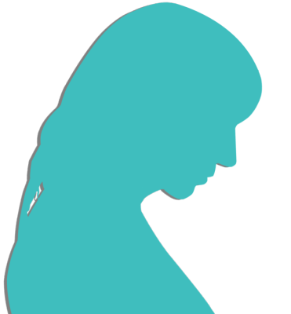
「…………」
video: 桜山頂.wmv
「お母さん……？」
video: 桜山頂.wmv
「私……
私、女ケ沢で茜に同じことを言ったことがあるの？」
「は！？」
「もし春花をいじめる子供たちを殺さなかったら、古郡家はただじゃすまないって。 もしなつみちゃんがあの時来てくれなかったら、この子と同じことをしていたかもしれない」
「は！？」
「もし春花をいじめる子供たちを殺さなかったら、古郡家はただじゃすまないって。 もしなつみちゃんがあの時来てくれなかったら、この子と同じことをしていたかもしれない」
video: 桜山頂.wmv
「お母さん……」
「確かに栄一郎さんを殺したこの子を許すことはできない。 でも…… 私にこの子を責める資格はあるのかしら……。 私が女ケ沢でしようとしたことは、この子と何も変わらない」
「だけどだからって……」
「確かに栄一郎さんを殺したこの子を許すことはできない。 でも…… 私にこの子を責める資格はあるのかしら……。 私が女ケ沢でしようとしたことは、この子と何も変わらない」
「だけどだからって……」
video: 桜山頂.wmv
「私……それはやっぱりできません。
例え理解してくれる方々がいても、そんなこと……」
「そ、そうだよ……！ どんなに苦しい事情があったからって……。 だからって…… そんな……。
「そ、そうだよ……！ どんなに苦しい事情があったからって……。 だからって…… そんな……。
video: 桜山頂.wmv
くそ、何だよなつみや五島どころかお母さんまで……！
チガ姉は！？
夏菜は！？
こいつ許せないよな！？」
video: 桜山頂.wmv
「ん……許せないけど……。
でも、この子はどうしたら助かったのかしら？
ごめん、私には分からないわ……」
video: 桜山頂.wmv
「そうだよねえ……殺さなきゃ殺されてたってことでしょ？
私が狩ろうとした動物たち、殺されないために私を殺そうとしたこと、何度もあるよ？
それって自分勝手とまでは言えないんじゃない？」
video: 桜山頂.wmv
「だってこいつ、死ぬのなんて怖くないって言ってるし！」
「だから殺していいってのはおかしくない？ 死ぬのが怖くないのと、死んでもいいのは違うでしょ？」
「何だよお前ら……！ 私、間違ってるのか……？」
「だから殺していいってのはおかしくない？ 死ぬのが怖くないのと、死んでもいいのは違うでしょ？」
「何だよお前ら……！ 私、間違ってるのか……？」
video: 桜山頂.wmv
「1番の過ちを犯したのは私です。それは理解しています。
だから、私が皆さんと元木町に行く資格なんて……」
「まずはあなたの意思を聞かせて。みんなの意見はそれからでもいいの。 糸姫、どうするの？ 死月妖花に頼らなくたって、願いをかなえる方法、あると思うんだけど。 どうして今までは自分の足で元木町に行こうとしなかったの？」
「まずはあなたの意思を聞かせて。みんなの意見はそれからでもいいの。 糸姫、どうするの？ 死月妖花に頼らなくたって、願いをかなえる方法、あると思うんだけど。 どうして今までは自分の足で元木町に行こうとしなかったの？」
video: 桜山頂.wmv
「先ほども申しました通り、普段私と死月妖花は1つです。
死月妖花がここにいる限り、私もここから動くことができません。
だから私は死月妖花に知性を与える代わりに、死月妖花は私の願いを聞き入れ元木町へ移ることにしたのです」
video: 桜山頂.wmv
「しかし今、死月妖花は大変に疲労しています。
休息を取らせるため、私は数百年ぶりに少しの間だけ切り離されています。
生きた人間に歳を取らせずに保つのは、死月妖花と言えど大変みたいですから」
「だったら、今なら私たちと一緒に元木町に行けるよね？」
「それは…… そうですけど……」
「だったら、今なら私たちと一緒に元木町に行けるよね？」
「それは…… そうですけど……」
video: 桜山頂.wmv
「ほんと、お前は甘いよな……。もう気が抜けたよ……」
video: 桜山頂.wmv
「でもなつみちゃんはいつも、みんなが幸せになれる選択ができるの、知ってるでしょ？
私も昔、なつみちゃんに救われたんだから」
「…………」
「私もさっきは怒りに身を任せたけど、この子を今ここでどうこうしたところで、何も変わらない。 死月妖花はそのまま」
「…………」
「私もさっきは怒りに身を任せたけど、この子を今ここでどうこうしたところで、何も変わらない。 死月妖花はそのまま」
video: 桜山頂.wmv
「ねえ糸姫、どうするの？」
私は糸姫に向けて手を伸ばす。
私は糸姫に向けて手を伸ばす。
video: 桜山頂.wmv
「本当に……よろしいのでしょうか……」
「春花、いいかな？」
「春花、いいかな？」
video: 桜山頂.wmv
「もう好きにしろよ……。
野蛮人だのなんだの言われた上にこんな話されたら、何もする気起きないわ……」
video: 桜山頂.wmv
「ありがとう、春花。
さあ糸姫、立って」
「…………」
糸姫は私の手を握り、ゆっくりと立ち上がる。
「行こう、元木町に」
糸姫の手を引き、歩き出す。
と、糸姫が春花やおばさんたちに目をやる。
「…………」
糸姫は私の手を握り、ゆっくりと立ち上がる。
「行こう、元木町に」
糸姫の手を引き、歩き出す。
と、糸姫が春花やおばさんたちに目をやる。
video: 桜山頂.wmv
「あの……」
「何だよ、今さらごめんなさいとでもいう気か？」
「それもありますが…… 私、ほんとに図々しいというか……」
「何を今さら…… でもこうしなきゃ元木町がやばいんだろ？」
「そうですね……。 死月妖花が元木町を選んだのは私の意思によるものですから、それがないなら……」
「何だよ、今さらごめんなさいとでもいう気か？」
「それもありますが…… 私、ほんとに図々しいというか……」
「何を今さら…… でもこうしなきゃ元木町がやばいんだろ？」
「そうですね……。 死月妖花が元木町を選んだのは私の意思によるものですから、それがないなら……」
video: 桜山頂.wmv
「で、お前の大切な人ってもう死んでるんだろ？
墓参りしたら満足なのか？」
「私が死月妖花に取り込まれた時、その方はまだ生きていました。 でもその数年後に元木の地で亡くなってしまって……。 数十年前に、ここと元木町がつながった時、初めてその方の御遺骨に触れることができたのですが……」
「私が死月妖花に取り込まれた時、その方はまだ生きていました。 でもその数年後に元木の地で亡くなってしまって……。 数十年前に、ここと元木町がつながった時、初めてその方の御遺骨に触れることができたのですが……」
video: 桜山頂.wmv
「もうその状態では死月妖花の力でもよみがえらせることは無理だと判明しました」
「え？」
「だから春花さんのおっしゃる通り、残念ですが御遺骨の前で供養することしかできません。 でもここまでやったんです。せめて、それだけでも叶えられたら……」
顔をしかめながら糸姫の話を聞いていた春花の顔が、更に歪む。
「え？」
「だから春花さんのおっしゃる通り、残念ですが御遺骨の前で供養することしかできません。 でもここまでやったんです。せめて、それだけでも叶えられたら……」
顔をしかめながら糸姫の話を聞いていた春花の顔が、更に歪む。
video: 桜山頂.wmv
「なあ、でも……。
今まで死月妖花ってたくさんの死体を動かしたり、死体から桜を生やしたりしたんだろ？」
「ええ、確かに……」
「白骨死体になったら生き返らせられないってこと、さすがに死月妖花はずっと前から知ってたんじゃないのか？」
「どういうことでしょう？」
「ええ、確かに……」
「白骨死体になったら生き返らせられないってこと、さすがに死月妖花はずっと前から知ってたんじゃないのか？」
「どういうことでしょう？」
video: 桜山頂.wmv
「新村先輩の言いたいことが分かりました。
つまり死月妖花は、初めからその人を生き返らせるつもりがなかったんです」
「え？」
「え？」
video: 桜山頂.wmv
「お前……
ずっと死月妖花に利用されていたってことになるんじゃないか？」
video: 桜山頂.wmv
「人間の知性さえ手に入れば、糸姫の願いなどどうでもいい。
ここよりも人の多い場所へ移動し、より繁殖できれば、もう糸姫に用はないってことです」
「そんな……」
「そんな……」
video: 桜山頂.wmv
「次第に人間の知性を手に入れ、その人が死んでもなお、糸姫を逃がさなかったのは……
死月妖花の存在を、糸姫から外部に漏れないようにするため」
video: 桜山頂.wmv
「私は……
死月妖花にだまされていた……？
私はただ、人を殺し続けていただけ……？」
「ねえ糸姫！ 早くここから逃げようよ！ 次に死月妖花が動き出したら、糸姫も無事じゃすまないよ！」
「ねえ糸姫！ 早くここから逃げようよ！ 次に死月妖花が動き出したら、糸姫も無事じゃすまないよ！」
video: 桜山頂.wmv
「い、いや……！ 私……騙されていたなんて……！
私はただ、あの方のおそばにいたいだけなのに……！
ただ殺し続けていただけだなんて……！」
video: 桜山頂.wmv
「糸姫！ 早く！」
「なつみさん……。 ありがとうございます。 でも…… どうやらここまでのようです」
「ここまでって……？」
「なつみさん……。 ありがとうございます。 でも…… どうやらここまでのようです」
「ここまでって……？」
「死月妖花が動き始めました」
「やっぱり、私は死月妖花から離れられない運命なんです。
なつみさん……」
糸姫は私に笑顔を向ける。
しかし、その目からはまた、涙がこぼれ落ちる。
糸姫は私に笑顔を向ける。
しかし、その目からはまた、涙がこぼれ落ちる。
「最後に、あなたの優しさに触れることができて、嬉しかったです」
「ねえ、早く……！」
「ねえ、早く……！」
「こんなにも罪深い私のために慈悲を与えて下さったこと、感謝の念に絶えません。
このような気持ちで最期を迎えることができて……
もっと早くあなたに出会えていたなら……」
「糸姫！」
「糸姫！」
「さようなら」
 video: 桜吹雪風船なし.wmv
video: 桜吹雪風船なし.wmvその時、風が吹き込まないはずのこの奥地に、台風のような風が吹き荒れ、あの音が鳴る。
積もった桜の花びらがブリザードのように舞い上がり、私たちの視界を奪う。
積もった桜の花びらがブリザードのように舞い上がり、私たちの視界を奪う。
video: 桜吹雪風船なし.wmv「な、なんだよ、これ……！」
手探りで春花と五島を探す。
幸い、すぐに2人の手を握ることができた。
手探りで春花と五島を探す。
幸い、すぐに2人の手を握ることができた。
video: 桜山頂.wmv
しかし手を握った瞬間、強風が嘘のように止んでしまい、さらさらと桜の降り注ぐ音が響き渡る。
video: 桜山頂.wmv
「何が起きたんですか……？」
video: 桜山頂.wmv
「お母さん！ いるか！？」
「いるわよ！ 茅萱ちゃんも夏菜ちゃんも！」
「誰も注射されてませんか！？」
「多分、大丈夫！」
「いるわよ！ 茅萱ちゃんも夏菜ちゃんも！」
「誰も注射されてませんか！？」
「多分、大丈夫！」
video: 桜山頂.wmv
やがて、ほとんどの桜が地面に落ち、また元の静寂と景色が戻った。
ただ1つを除いて。
ただ1つを除いて。
video: 桜山頂.wmv
「糸姫はどこ？」
video: 桜山頂.wmv
「…………
いない……」
video: 桜山頂.wmv
糸姫が立っていた場所に、1本の注射器。
使われた形跡のない、真新しい注射器の中に、ピンク色の液体が入っている。
使われた形跡のない、真新しい注射器の中に、ピンク色の液体が入っている。
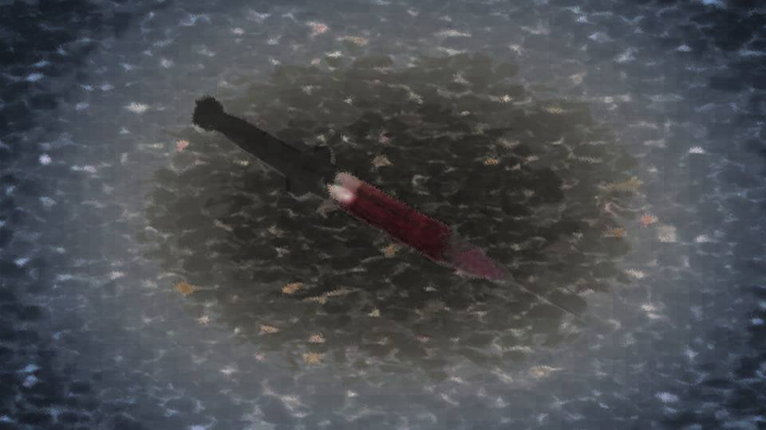
video: 桜山頂.wmv「許さない……」
「許すわけないだろ……！」
どこからか聞こえる恨み言。
しかし、私たちはだれも口を開いていない。
上の方から、聞こえてくる。
「許すわけないだろ……！」
どこからか聞こえる恨み言。
しかし、私たちはだれも口を開いていない。
上の方から、聞こえてくる。
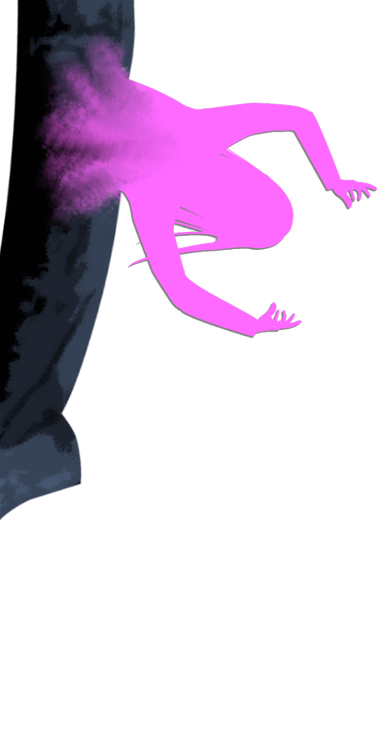
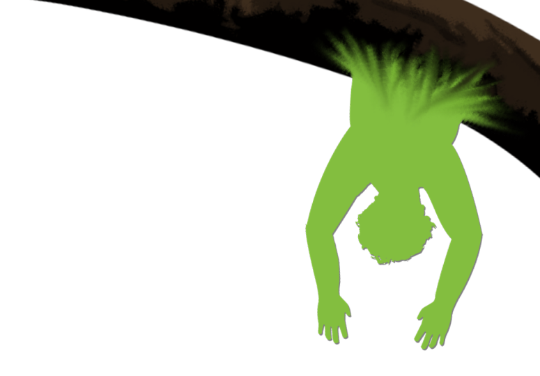
――！！
桜の木にめり込んだ、サクラさんとおじさん。
その2人が、まるで呪われた人形のようにうごめき、ぼそぼそと恨み言を垂れている。
桜の木にめり込んだ、サクラさんとおじさん。
その2人が、まるで呪われた人形のようにうごめき、ぼそぼそと恨み言を垂れている。
「糸姫……！ 私の恩を忘れたのか……！」
「この地の滋養はすべて吸った。だから僕は、もうここでは生きられない」
「糸姫、お前も来るんだ！」
「共に元木の地に根を下ろし、永劫の繁栄を成し遂げようぞ」
「糸姫、騙してなんかいないわ。ほら、一緒に行きましょう」
「この地の滋養はすべて吸った。だから僕は、もうここでは生きられない」
「糸姫、お前も来るんだ！」
「共に元木の地に根を下ろし、永劫の繁栄を成し遂げようぞ」
「糸姫、騙してなんかいないわ。ほら、一緒に行きましょう」
サクラさんとおじさんにしては、声も口調もさっきとは全然違う。
これは、死月妖花の言葉―― ただ、サクラさんとおじさんの舌と声帯を利用しているだけだ。
これは、死月妖花の言葉―― ただ、サクラさんとおじさんの舌と声帯を利用しているだけだ。
――そうだ！ 糸姫を逃がすな！
――女神と言われて調子に乗りやがったな！
――逃がすわけない。
――糸姫、裏切りは許さない。
――お前は私の永遠の奴隷でいろ！
――女神と言われて調子に乗りやがったな！
――逃がすわけない。
――糸姫、裏切りは許さない。
――お前は私の永遠の奴隷でいろ！
そのような声があちこちから聞こえてくる。
木の中から響くような声が聞こえる。
木の中から響くような声が聞こえる。
「ま、また地震かよ……！」
「あーっはっはっは！ 来る！ 来るぞ！」
「女神様のお出ましだああああ！！！」
「女神様のお出ましだああああ！！！」
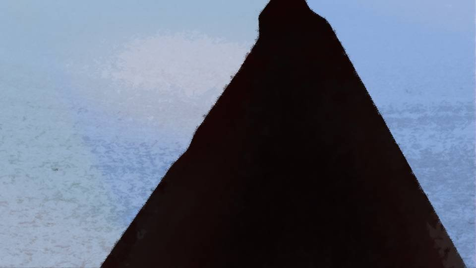
すぐ目の前で、あの不気味な音が鳴り響く。
この音は、地面の亀裂の中から聞こえてくる。
この音は、地面の亀裂の中から聞こえてくる。
「来る……
来るよ！」
「な、何が来るんだよ……！」
「死月妖花の…… 本体」
「な、何が来るんだよ……！」
「死月妖花の…… 本体」
巨大な桜の木に取り込まれてしまった糸姫。
これが―― 死月妖花。
これが―― 死月妖花。
Read ✓ Next: 心をあなたに。 →